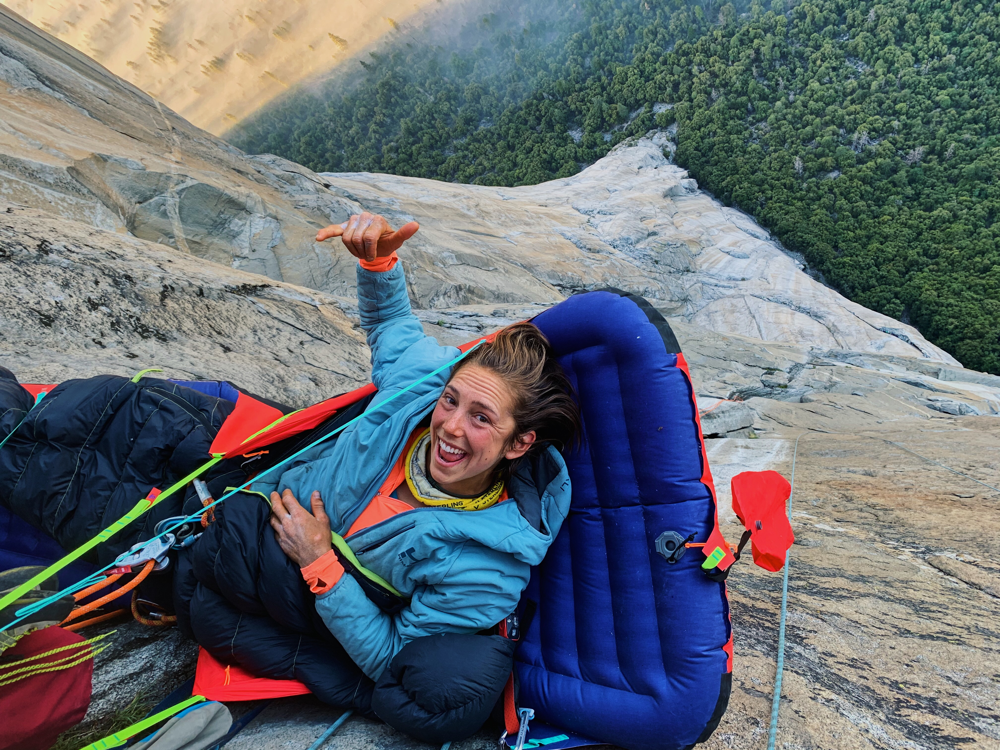
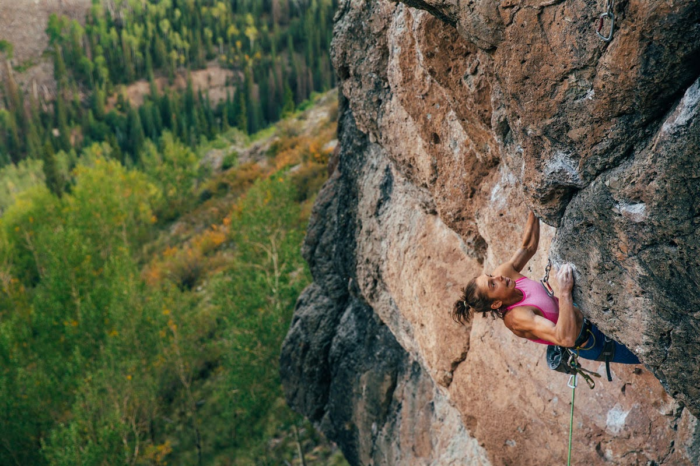
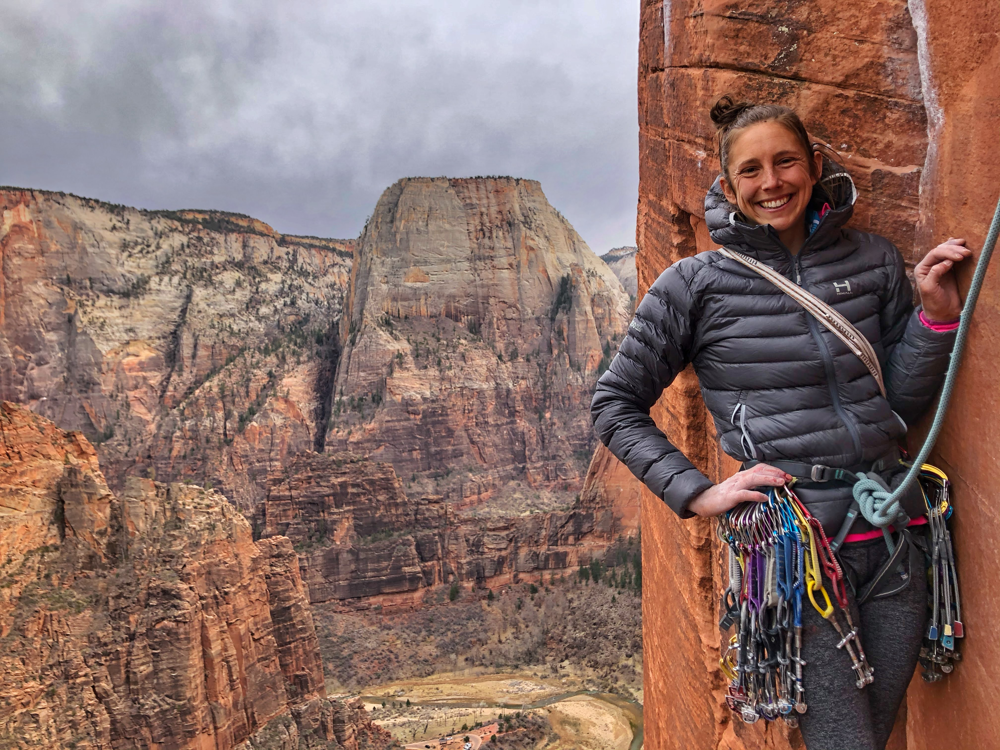
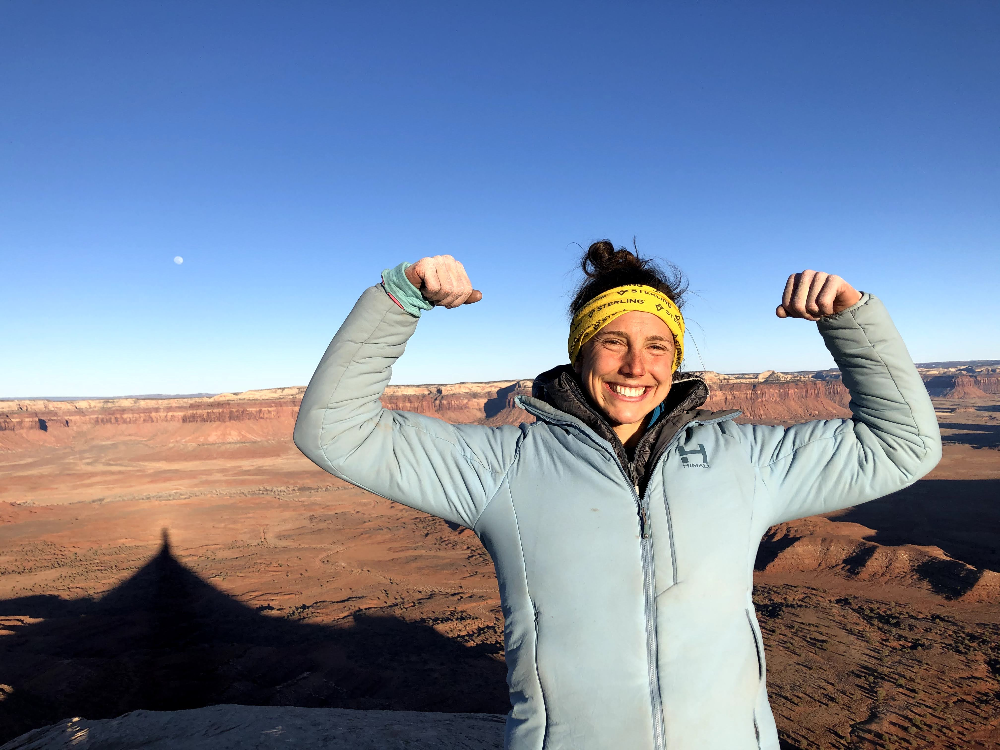

Amity Warme
Professional Climber / Nutrition Coach
Hi, I'm Amity Warme. I love rock climbing! I live a nomadic life with my husband, Connor, in our self-built van. We pursue climbing objectives throughout the western US. I'm also a full-time grad student, studying Sport Nutrition. I'm passionate about helping others maximize their performance through proper nutrition.
Achievements
- Golden Gate, free, ground up. 5.13a, 33 pitches, Yosemite
- Freerider, free, ground up. 5.12d, 31 pitches, Yosemite
- Liberty Crack, free, redpoint. 5.13b, 12 pitches, North Cascades
- Enter the Dragon, first female ascent. 5.13+ trad, the Fins
- Vesper. 5.13d/14a sport, the Fins
- Third Millenium. 5.13d sport, the Monastery

Amity in Action!

Amity midway up El Cap during her Golden Gate ascent, Yosemite.

Amity tackling the crag classic, Full Facial at God's Crag, Colorado.

Amity on the penultimate pitch of Moonlight Buttress, Zion.

Amity after sending both Liquid Sky and Lightning Bolt Cracks on the North Six Shooter, Indian Creek.

"In the mountains, there you feel free."
"Only those who will risk going too far can possibly find out how far they can go."
- T.S. Eliot
Contact Me
Feel free to reach out, I'd love to hear from you!